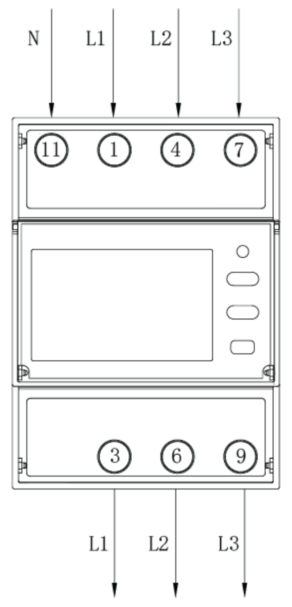
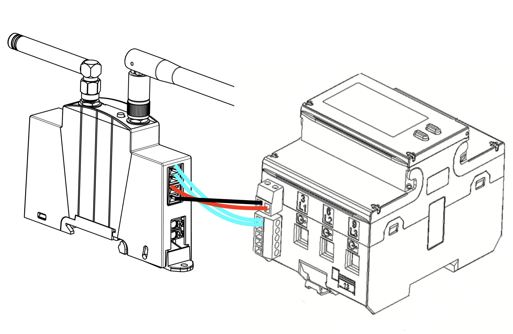
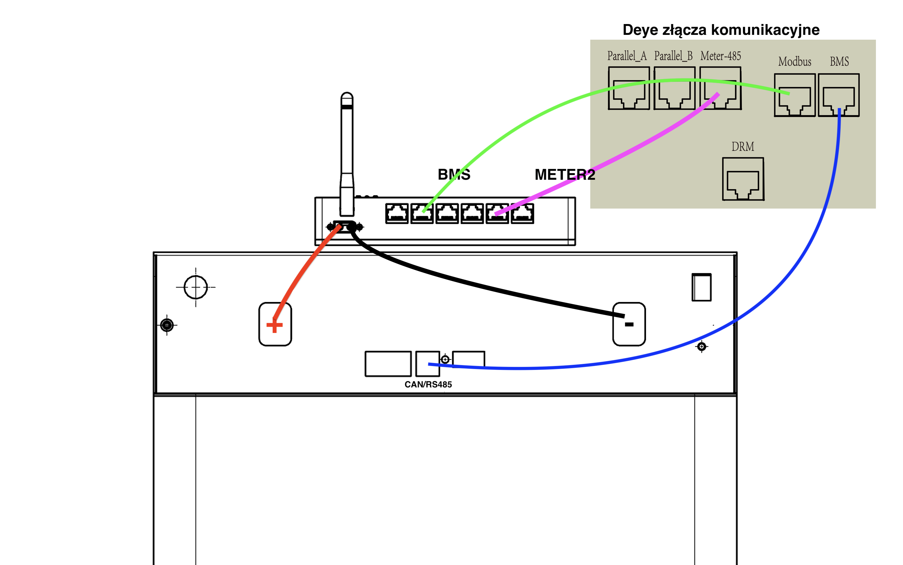
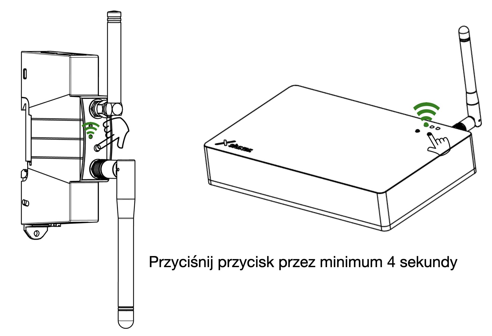
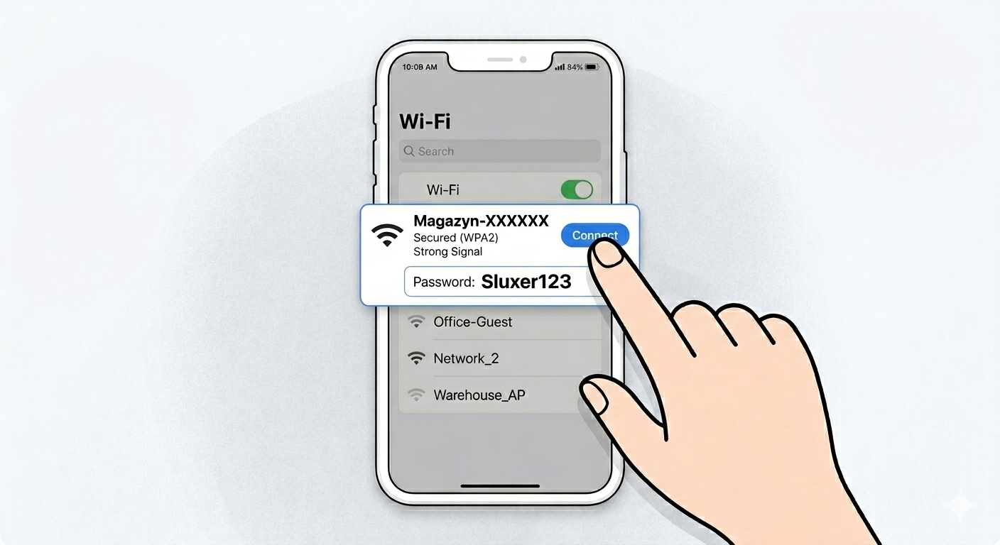
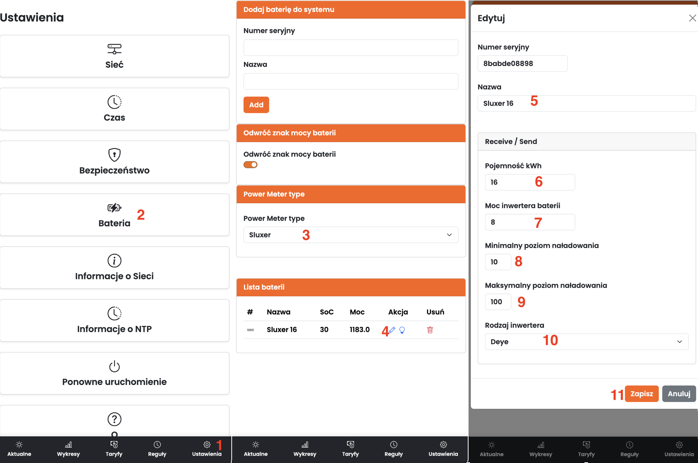
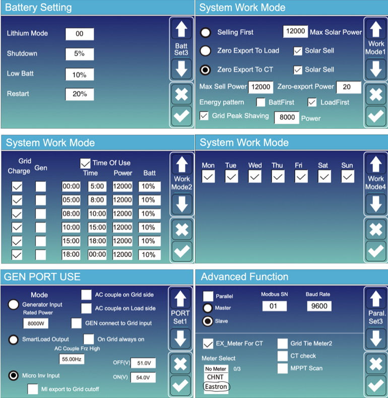
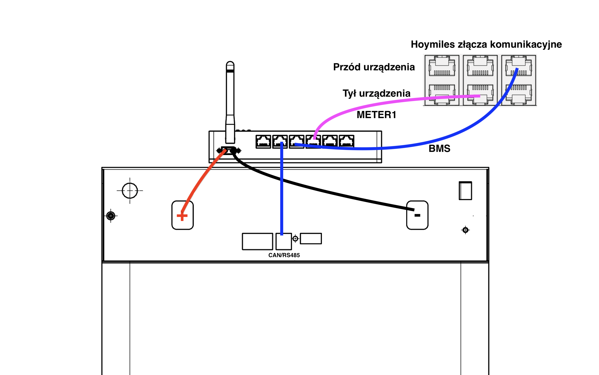
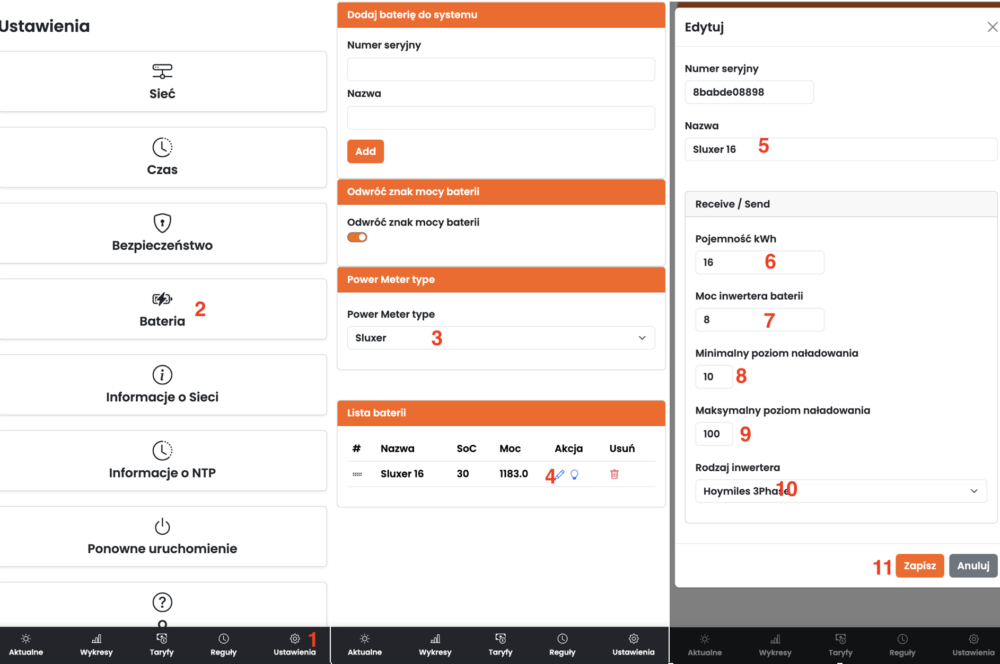

Wybierz swój inwerter.
Podłącz licznik tak, żeby był w stanie zmierzyć wszystkie odbiorniki i urządzenia wytwórze prądu znajdujące się w tej instalacji.

W zestawie znajdują się dwa przygotowane kable o kolorach biały-biały oraz czarwony-czarny. Podłącz odpowiednie wtyczki do licznika energii(pasują tylko w jednej pozycji). Następnie drugie końce kabli podłącz do modułu EMS. Zwróć uwagę, że kable pasują tutaj naprzemiennie. Pierwszym kablem z przodu musi być biały.

Zwróć uwagę na podłączenie pomiędzy modułem baterii, baterią oraz samym falownikiem. Wykorzystaj złącza w module EMS baterii opisane jako BMS oraz METER2.

Upewnij się, że wszystkie połączenia elektryczne są poprawnie wykonane oraz, że wszystkie skrętki oraz złącza RJ45 poprawnie przewodzą prąd. Włącz baterię oraz zasilanie w rozdzielni elektryczej. Przytrzymaj zaznaczone przyciski minimum 4 sekundy aż do pojawienia się migających na zielono diód. Zwiększenie częstotliwości migania diód oznacza poprawnie zakończony proces parownia.

Podłącz się do sieci WiFi o nazwie Magazyn-XXXXXX z wykorzystaniem hasła "Sluxer123".

Przejdź do zakładki Ustawienia i wybierz opcję z menu Bateria. Z listy wybierz odpowiedni licznik np. Sluxer. Edytuj sparowaną baterię uzupełniając wszystkie zaznaczone pola i kliknij Zapisz.

Ustaw falownik jak na poniższych zdjęciach.

Podłącz licznik tak, żeby był w stanie zmierzyć wszystkie odbiorniki i urządzenia wytwórze prądu znajdujące się w tej instalacji.
W zestawie znajdują się dwa przygotowane kable o kolorach biały-biały oraz czarwony-czarny. Podłącz odpowiednie wtyczki do licznika energii(pasują tylko w jednej pozycji). Następnie drugie końce kabli podłącz do modułu EMS. Zwróć uwagę, że kable pasują tutaj naprzemiennie. Pierwszym kablem z przodu musi być biały.
Zwróć uwagę na podłączenie pomiędzy modułem baterii, baterią oraz samym falownikiem. Wykorzystaj złącza w module EMS baterii opisane jako BMS oraz METER1.

Upewnij się, że wszystkie połączenia elektryczne są poprawnie wykonane oraz, że wszystkie skrętki oraz złącza RJ45 poprawnie przewodzą prąd. Włącz baterię oraz zasilanie w rozdzielni elektryczej. Przytrzymaj zaznaczone przyciski minimum 4 sekundy aż do pojawienia się migających na zielono diód. Zwiększenie częstotliwości migania diód oznacza poprawnie zakończony proces parownia.
Podłącz się do sieci WiFi o nazwie Magazyn-XXXXXX z wykorzystaniem hasła "Sluxer123".
Przejdź do zakładki Ustawienia i wybierz opcję z menu Bateria. Z listy wybierz odpowiedni licznik np. Sluxer. Edytuj sparowaną baterię uzupełniając wszystkie zaznaczone pola i kliknij Zapisz.

Upewnij się, że w ustawieniach falownika został włączony licznik energii z opcją "Sieć elektryczna". Sprawdź czy w ustawieniach zaawansowanych minSoC oraz maxSoC zgadzają się z ustawieniami EMS. Włącz "tryb zużycia własnego", "zarezerwowny stan naładowania" musi odpowiadać ustawieniu minSoC i minimalny poziom naładowania w EMS